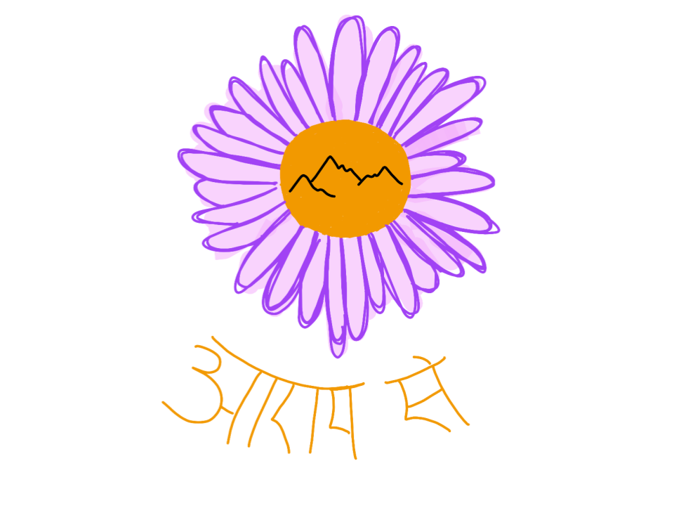

Pack
Purple Ultralight Frameless Pack
Dyneema Composite Fabric main body in lilac with yellow Dyneema hip pockets and grey mesh front pocket. Roll-top closure with side compression. Built for long-distance trails.
Making — Aram Se
Handmade ultralight outdoor equipment sewn from technical fabrics — backpacks, sleeping quilts, handlebar bags, gaiters, and more. Each piece is designed for the trail and made by hand.

Dyneema Composite Fabric main body in lilac with yellow Dyneema hip pockets and grey mesh front pocket. Roll-top closure with side compression. Built for long-distance trails.


Shiny ripstop nylon shell with down fill. Sewn-through baffles, integrated hood, and draft collar. A cozy companion for cold nights in the backcountry.

Red X-Pac main body with yellow Dyneema roll-top, zippered front pocket, and dual bar mounts. Photographed in action on Colorado trails.

Three bags in production simultaneously. Yellow Dyneema roll-top and red X-Pac body — open here showing the structured interior and clean seam finishing.


White Dyneema CF body with navy webbing, red accent pockets, and a custom embroidered Outdoor Recreation Center patch. Commissioned ultralight alpine pack.

The finished Mines commission pack loaded and on-back. Dyneema CF structure holds its shape beautifully under load while staying incredibly light.

A batch of ten gaiters laid out before final assembly. White Dyneema shells with navy blue webbing, buckles, and hot-pink pull tabs for quick donning.

Cut components fanned out showing the full scope of a batch run — white Dyneema fronts, pink and black neoprene instep straps, and blue webbing ready for assembly.
About Aram Se
Aram Se is my making practice — a name that carries the Hindi phrase for "take it easy, take your time." Every piece is designed and sewn by hand, made to be used hard in the outdoors.
I work primarily with technical fabrics like Dyneema Composite Fabric (DCF/cuben), X-Pac, and ripstop nylon — materials that are incredibly strong, light, and weather-resistant. Each project is an exercise in thoughtful design and careful construction.